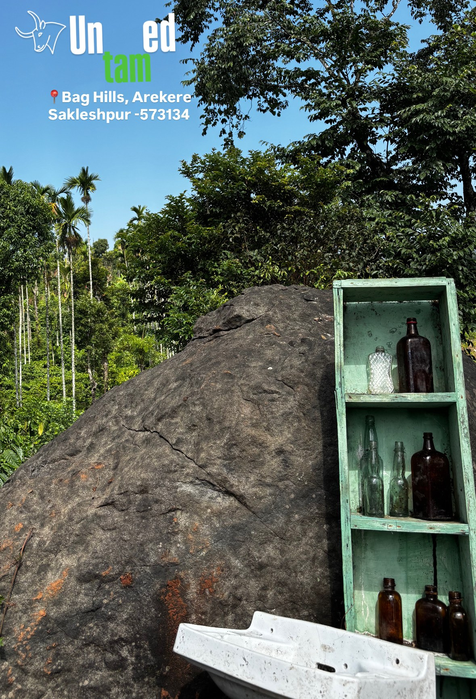
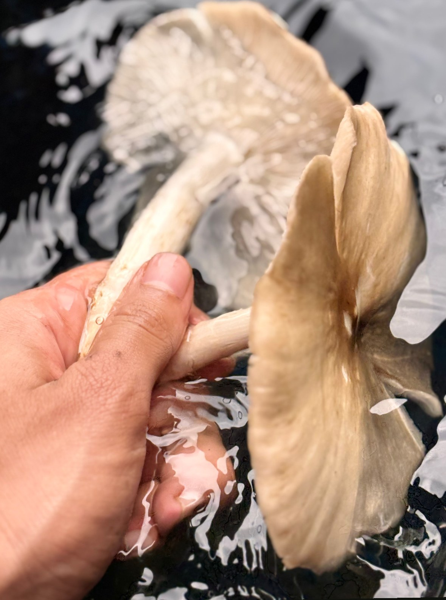
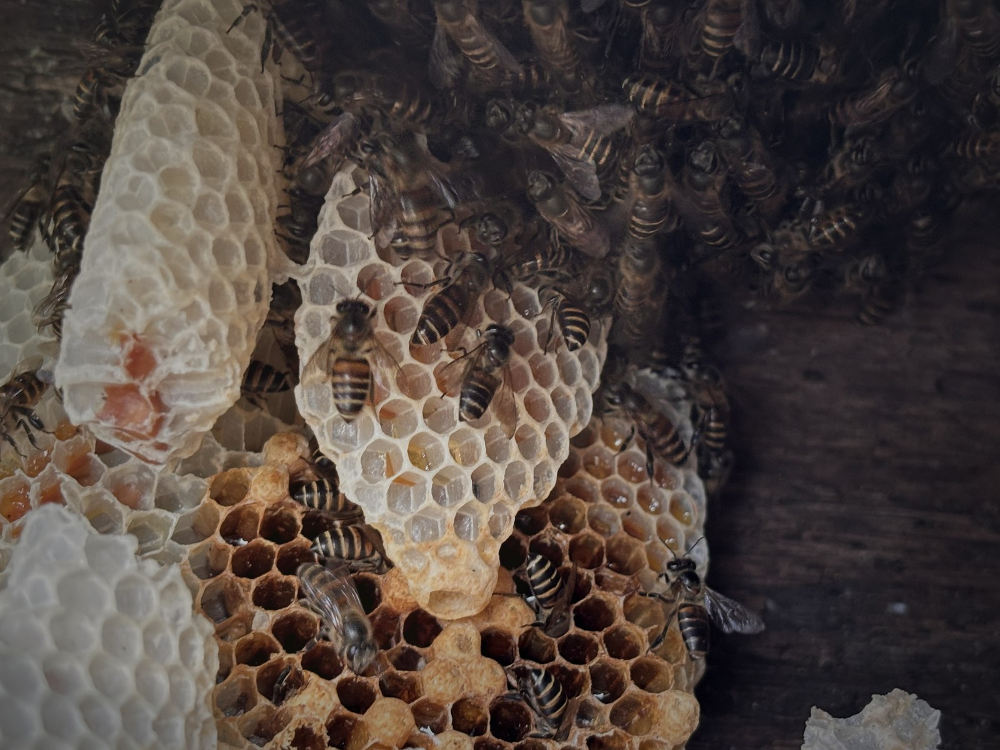
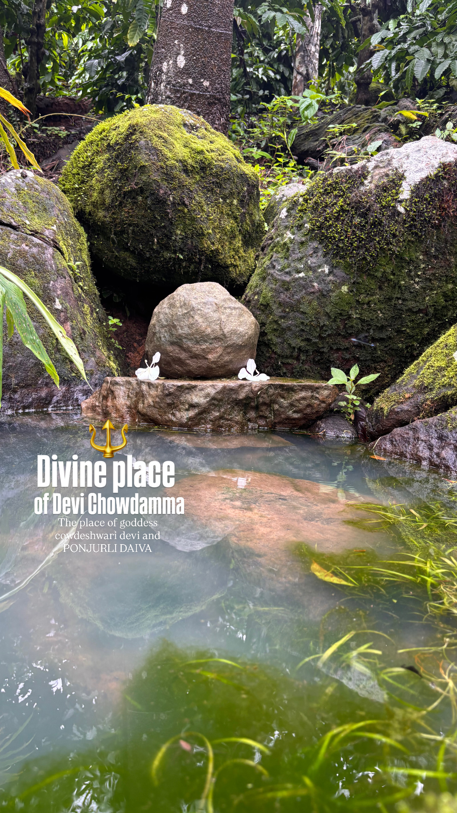
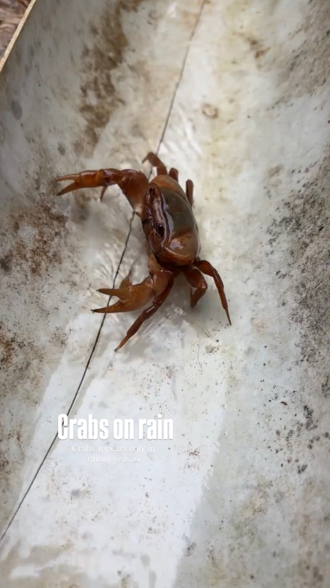
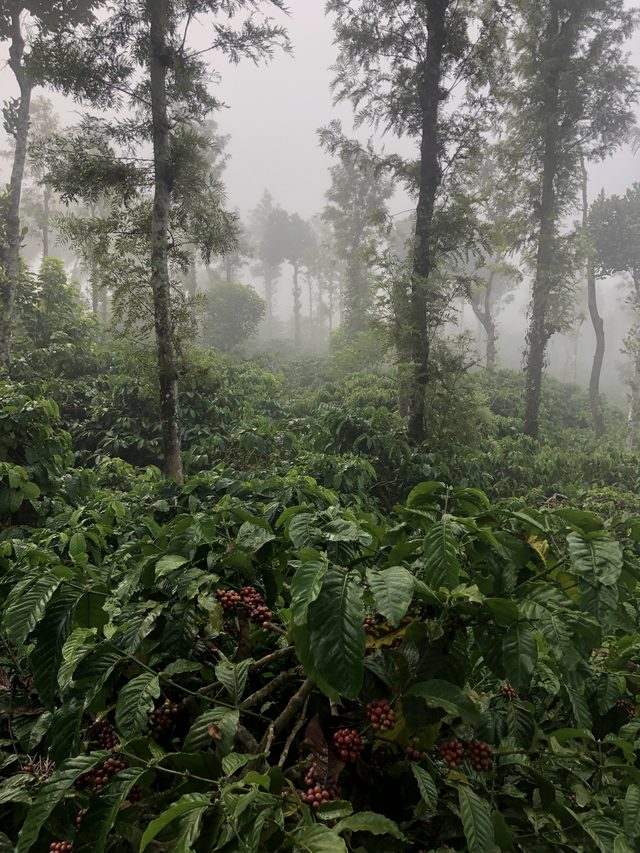
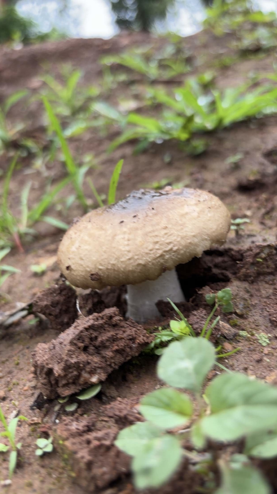
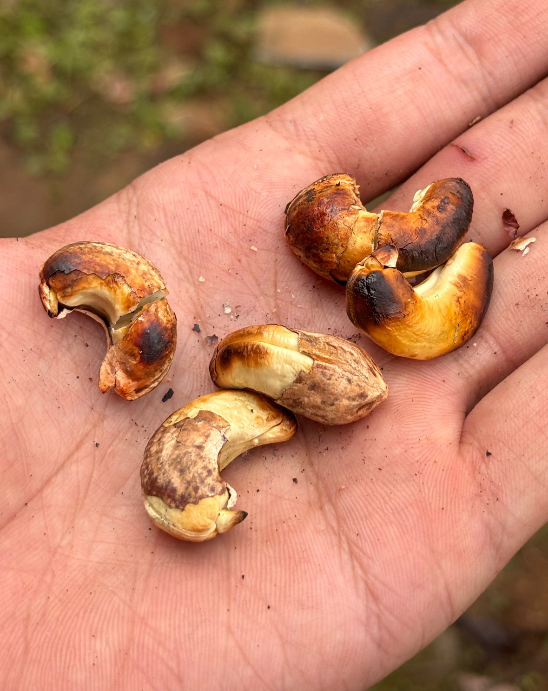

Hiking Trails
Beginner-friendly forest paths, short climbs, and calm nature trails for weekend trekkers.
Arekere, Sakleshpur, Hassan
Forest trails. Viewpoints. Western Ghats nature.
Plan a peaceful hike, family-friendly nature walk, sunrise viewpoint visit, or photography stop at Bag Hills near Sakleshpur, Karnataka.
ಬಾಗ್ ಹಿಲ್ಸ್ – ಅರೆಕೆರೆ, ಕರ್ನಾಟಕ
ಪ್ರಕೃತಿ, ಪರಂಪರೆ, ಸುಂದರತೆ.
ಪ್ರತಿಯೊಂದು ಮುಂಜಾನೆ ಹೊಸ ಶಾಂತಿಯನ್ನು ತರುತ್ತದೆ.
About Bag Hills
Bag Hills is a scenic hiking and nature destination in Arekere near Sakleshpur, Hassan district, Karnataka. Set within the Western Ghats travel belt, it is suited for beginner-friendly hikes, family nature walks, sunrise and sunset viewpoints, bird watching, and nature photography. Visitors can expect quiet forest paths, rock formations, fresh mountain air, local flora, seasonal wildflowers, monsoon mushrooms, honey bees, and panoramic hill views. Bag Hills is not positioned as a homestay or resort; it is a peaceful outdoor place that can be included in a Sakleshpur weekend getaway, sightseeing plan, coffee plantation drive, or eco-tourism itinerary. The experience is best enjoyed slowly, with respect for the landscape and local village setting.
Original photography, local visitor guidance, and location details are maintained by Bag Hills. Last updated: .
ಅರೆಕೆರೆ ಗ್ರಾಮದ ನೈಸರ್ಗಿಕ ಸೌಂದರ್ಯ, ಮಳೆಗಾಲದ ಅಣಬೆಗಳು, ಪರಂಪರೆಯ ಗೋಡಂಬಿ ಹುರಿಯುವ ವಿಧಾನ ಮತ್ತು ಬೆಟ್ಟದ ಶಾಂತ ವಾತಾವರಣ – ಇವೆಲ್ಲವೂ ಬಾಗ್ ಹಿಲ್ಸ್ ಅನ್ನು ವಿಶೇಷವಾಗಿಸುತ್ತವೆ.

Beginner-friendly forest paths, short climbs, and calm nature trails for weekend trekkers.
Open hill views, sunrise light, golden hour skies, and Western Ghats landscapes.
Seasonal wildflowers, biodiversity, honey bees, local flora, and monsoon discoveries.
Nature
Bag Hills gives visitors a close look at Sakleshpur nature: monsoon mushrooms, local flora, honey bees, bird watching, rain-season life, sacred forest corners, and quiet eco-tourism moments.

Seasonal wild mushrooms appear during the rains and make Bag Hills valuable for slow nature exploration. Their arrival is part of the monsoon character of Sakleshpur and a reminder to observe local biodiversity without disturbing it.
ಮಳೆಗಾಲದಲ್ಲಿ ಕಾಣಿಸಿಕೊಳ್ಳುವ ಸ್ಥಳೀಯ ಅಣಬೆಗಳು ಇಲ್ಲಿ ಪ್ರಕೃತಿಯ ಋತುಚಕ್ರದ ಭಾಗವಾಗಿವೆ.

Honeycomb textures and bee activity reflect the living richness of the forest landscape. Bag Hills connects visitors with honey bees, pollination, local flora, and the slower rhythms of responsible eco-tourism.
ಕಾಡಿನ ಸಹಜ ಸಿಹಿತನದ ಒಂದು ಝಲಕ್.

A quiet sacred spring among moss-covered rocks, associated with Cowdeshwari Devi and Ponjurli Daiva. Water, stone, and forest meet here in a place held with reverence. Visitors should treat it as a heritage and nature location, not only a sightseeing stop.
ಪಾಚಿ ಹೊದ್ದ ಬಂಡೆಗಳ ನಡುವೆ ಇರುವ ಈ ಪವಿತ್ರ ಜಲಸ್ಥಳವು ಚೌಡೇಶ್ವರಿ ದೇವಿ ಮತ್ತು ಪಂಜುರ್ಲಿ ದೈವದೊಂದಿಗೆ ಸಂಬಂಧ ಹೊಂದಿದೆ.

Small forest crabs emerge when the monsoon returns. Their brief seasonal appearance is one of the living signs of rain around Bag Hills and part of the biodiversity that makes the Western Ghats special.
ಮಳೆಗಾಲ ಮರಳಿದಾಗ ಸಣ್ಣ ಕಾಡು ಏಡಿಗಳು ಕಾಣಿಸಿಕೊಳ್ಳುತ್ತವೆ. ಅವುಗಳ ಋತುಮಾನದ ಆಗಮನವು ಬಾಗ್ ಹಿಲ್ಸ್ನ ಮಳೆಯ ಜೀವಂತ ಸಂಕೇತವಾಗಿದೆ.
Mist settles around the forest and sacred spring before the day warms.

Quiet paths move between rock, leaf, wet earth, and coffee plantation scenery nearby.

Rain brings seasonal wildflowers, fresh growth, and small discoveries from the earth.
Tradition
A seasonal ritual of roasting cashews in the old way.

During the season, cashews are roasted in a simple traditional style that reflects the local rhythm of work, weather, and food culture. It is presented here as a cultural place experience, not a commercial product listing.
ಗೋಡಂಬಿಯನ್ನು ಪರಂಪರೆಯ ರೀತಿಯಲ್ಲಿ ಹುರಿಯುವ ವಿಧಾನವು ಇಲ್ಲಿ ಸ್ಥಳೀಯ ಬದುಕಿನ ಒಂದು ಭಾಗವಾಗಿದೆ.
Open skies, rock formations, and Western Ghats hill scenery.
Seasonal wildflowers, mushrooms, crabs, and fresh forest textures.
Honey bees and beekeeping connect the place to local biodiversity.
Fresh mountain air, peaceful trails, and a quieter side of Sakleshpur.
Hiking Trails
Bag Hills is best for travelers who want a calm Sakleshpur hiking experience rather than a rushed trek. The trails are scenic, natural, and suited for beginners, families, photographers, and visitors planning a peaceful forest walk in Karnataka.
Viewpoints
The open parts of Bag Hills are useful for sunrise viewpoints, sunset views, scenic road trip stops, and landscape photography. Early morning is calmer, while golden hour brings softer light across the rocks, forest edges, and Western Ghats views. Visitors should walk carefully, stay aware of weather, and avoid risky edges during rain.
Gallery
Original photography from Bag Hills: hiking trails, forest views, monsoon biodiversity, rock landscapes, honeycomb, and local seasonal traditions.
Visitor Guide
Use this guide for Sakleshpur sightseeing, a short weekend trek, a quiet nature trail, or a family-friendly forest walk near Arekere. Weather, footwear, and timing matter because the landscape changes with the season.
Bag Hills, Arekere near Sakleshpur
Hassan district, Karnataka - 573134
Nearby Attractions
Bag Hills can fit into a larger Sakleshpur tourism plan with heritage, nature, coffee plantations, spice plantations, scenic road trips, waterfalls, and Western Ghats viewpoints.
A well-known heritage and sightseeing stop near Sakleshpur, often combined with nature drives and hill station travel plans.
Bisle viewpoint is known for sweeping Western Ghats views, forested valleys, and a scenic road trip experience.
Waterfalls around Sakleshpur are popular during and after monsoon. Conditions vary, so visitors should check access and safety before planning.
Coffee plantations and spice plantations give Sakleshpur its hill station character and make Bag Hills part of a richer nature travel route.
Travelers searching for a Sakleshpur homestay, home stay, resort, eco resort, or hill station stay can use Bag Hills as a nearby outdoor nature experience.
The region is valued for biodiversity, forest trekking, mountain views, bird watching, and slow eco-tourism in Karnataka.
Blog / Updates
Helpful planning notes for travelers comparing hidden places in Sakleshpur, trekking destinations in Karnataka, peaceful weekend getaways, and family-friendly nature experiences.
Bag Hills is a strong choice for visitors who prefer offbeat forest trails, scenic viewpoints, and quieter nature walks near Arekere.
Read the hiking trail guideShort trails, fresh mountain air, rock landscapes, and a calm village setting make Bag Hills useful for a Bangalore to Sakleshpur weekend trip.
Plan your weekend visitMonsoon, winter mornings, sunrise, and golden hour each offer a different way to experience Bag Hills and the Western Ghats.
See best time detailsCombine Bag Hills with Manjarabad Fort, Bisle Ghat View Point, waterfalls near Sakleshpur, and coffee plantation scenery.
Explore nearby attractionsIf you are comparing a Sakleshpur homestay, home stay, resort, eco resort, or hill station stay, Bag Hills works well as a nearby nature outing.
Ask about visiting Bag HillsFAQ
Clear answers for hikers, families, photographers, weekend travelers, and anyone researching tourist places near Sakleshpur, Hassan, Karnataka, and the Western Ghats.
Bag Hills is a scenic hiking and nature destination in Arekere near Sakleshpur, Hassan, Karnataka. It is known for forest trails, rock formations, viewpoints, monsoon biodiversity, honey bees, local flora, and peaceful Western Ghats scenery.
Bag Hills is located in Arekere near Sakleshpur in Hassan district, Karnataka, India. It is part of the Western Ghats travel region and is relevant for Sakleshpur tourism, sightseeing, trekking, and weekend getaway searches.
Yes. Bag Hills is good for relaxed hiking, beginner-friendly nature walks, forest paths, scenic viewpoints, and slow outdoor exploration. The experience is more peaceful and nature-led than a hard adventure trek.
The trail is generally easy to moderate. Families and beginners can enjoy slower walks, while some rocky or wet sections may feel moderate, especially in monsoon. Sports shoes with grip are recommended.
Monsoon is best for greenery, mushrooms, and fresh biodiversity. Winter mornings are comfortable for walks. Sunrise and golden hour are best for scenic viewpoints and photography.
Families can visit Bag Hills for calm nature walks, photography, and fresh air. Children and elders should walk carefully, avoid slippery rocks, and stay on safer paths during rain.
Photography is welcome as part of the visitor experience. Bag Hills offers forest trail scenes, hill views, rock formations, monsoon life, honeycomb textures, sunrise light, and sunset tones.
Bag Hills can be suitable for sunrise views when weather and access conditions are favorable. Early visits should be planned responsibly with local guidance, proper footwear, and enough time.
Yes. Golden hour and sunset can create warm light across the rocks, trees, and hill views. Visitors should leave enough daylight for safe walking back.
Beginners can enjoy Bag Hills by choosing shorter walks, moving slowly, and avoiding risky sections. It is suitable for easy outdoor time, not only experienced trekkers.
Bag Hills is best described as a scenic hiking and nature destination near Sakleshpur. It can be included in Karnataka trekking and Western Ghats travel plans, especially for visitors who prefer quieter, beginner-friendly trails.
Carry a water bottle, sports shoes, camera, cap, rain jacket during monsoon, and any personal medicines. A light backpack is enough for most short nature walks.
Monsoon brings beautiful greenery but can make rocks and paths slippery. Visitors should wear good shoes, avoid risky edges, watch the weather, and ask for current local guidance before visiting.
Bag Hills supports bird watching and small nature observations such as seasonal plants, insects, honey bees, mushrooms, and rainy-season crabs. Wildlife sightings vary by season and time of day.
Yes. Bag Hills is suited to responsible eco-tourism because visitors can learn about local flora, honey bees, monsoon biodiversity, forest paths, and rural landscape traditions while respecting the place.
Nearby and related travel themes include Manjarabad Fort, Bisle Ghat View Point, Bisle viewpoint, waterfalls near Sakleshpur, coffee plantations, spice plantations, Western Ghats views, and scenic road trip routes.
Bag Hills is not presented as a homestay or resort listing. Travelers looking for a Sakleshpur homestay, home stay, resort, eco resort, or hill station stay can plan Bag Hills as a nearby nature outing.
Bag Hills fits well into a Bangalore to Sakleshpur weekend trip for travelers who want an offbeat place, forest walk, scenic viewpoint, nature trail, or peaceful photography stop.
Small groups, friends, and family groups can inquire before visiting. Sharing the group size helps the Bag Hills team suggest suitable timing, activity options, and visitor guidance.
Camping should not be assumed. Use the inquiry form to ask about current possibilities, local permissions, safety, weather, and responsible visitor guidance before planning any camping activity.
Use the Plan Your Visit inquiry form on this website or email Bag Hills at daivikad9@gmail.com. Include your visit purpose, group size, preferred activity, planned date, and message.
Tourism Inquiry
Planning a visit to Bag Hills? Tell us about your trip and we'll get back to you.